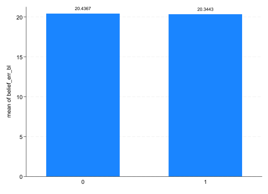
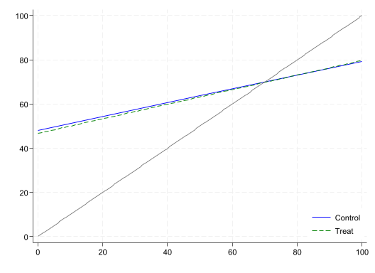

* Title: Econometrics Lab 3: RCT Replication in Stata
* Author: [INSERT NAME]
* Date: [INSERT DATE]
* ============================================================================ *
* Clear all objects in memory
clear all
* Set directory
cd "[INSERT FILE PATH]\EC3301\Lab 3"
* Start log
cap log close
log using lab-3-log.txt, replace text
* ============================================================================ *
* Open data
use "dizonross2019.dta"
** Create between-sibling score gap:
bys hhid (child): gen ave_12 = score_ave[1]-score_ave[2]
// creates a variable equal to difference between first and second childs score in each household
* ============================================================================ *
* Assignment
* ============================================================================ *
* Graphical analysis
* ============================================================================ *
* ATE
* ============================================================================ *
* Regression adjustment
* ============================================================================ *
* Interacted model
* ============================================================================ *
* Heterogeneity
* ============================================================================ *
* Close log
log closeEconometrics Lab 3
RCT Replication in Stata
During this lab we will attempt to replicate some of the results in Dizon-Ross (2019). The data you have been provided does not need much cleaning. However, you may will not get the exact same results as those shown in the paper because some variables are missing and there are small sample size differences. For the most part, your results should be very similar.
Context
This RCT was used as an example in Lecture 6.
Setting: primary schools in Machinga and Balaka districts, Malawi, in 2012. Primary school is technically free but still costly: parents spend about 1,750 MWK (US$10.6) per child per year. Schools must send report cards home each term, but 60% of parents say they don’t know their child’s performance from the last report, because the card never arrived or they couldn’t understand it.
Sample: The sampling frame includes households with at least two children in grades 2–6, with two children randomly chosen per household. Of 3,451 sampled households, 2,634 were eligible and surveyed, giving 5,268 parent–child pairs.
Randomization: households were randomly split half into treatment and half into control. Randomization was stratified on the between-sibling score gap and the estimated literacy rate in the household’s village, a proxy for parental education. Half of the treatment group also received more detailed skills information, but the paper pools all treated households and finds no separate effect.
Intervention: surveyors visited every household and ran a baseline survey on spending and beliefs about each child’s scores. In the same visit, treatment parents were walked through an easy-to-read report card for each child, showing math, English, Chichewa and overall scores, grades and class rank.
Outcomes: an endline survey immediately after the visit measured updated beliefs, the free workbook level chosen and willingness to pay for remedial textbooks. Longer-run outcomes came from school attendance records in the following month and a second endline survey about a year later, covering enrolment and spending, for a random subset of about 900 households.
Setup
On Moodle, under “Week 8”, you find the “Lab 3 Data” folder.
Create a folder on OneDrive (or your H drive) for “Lab 3”
Download the paper, store it in this folder, and open it on your computer. You will need to reference the various tables and figures.
Download the “dizonross2019.dta” file and store it in this folder.
Open Stata and create a new .do file. Save it as “Lab 2/lab-2.do”
Add the following to your .do file; editing the file path to match your folder structure.
User-written packages
In this lab you will make tables of summary statistics and regression output; just as you see in the paper. This is an important skill needed for the project. Most researchers use user-written packages like outreg2 and estout to do this. Unfortunately, these cannot be installed in the AppsAnywhere version of Stata, so we will make use of Stata’s dtable and etable commands. They get the job done, but are not as user-friendly. If you have access to your own Stata license, consider investigating these other options.
There is also a popular regression model package called reghdfe which is used to estimate models with fixed effects. We will use an alternative called areg.
NoteInstalling packages
Many user-written packages can be installed as follows: ssc install reghdfe.
Replication
Assignment
We begin by understanding assignment and validating randomization. The main variable of interest is the dummy variable treat, which =1 for the treated households.
Use the command
codebookto figure out how many unique schools.Use the command below to figure out if there are
duplicates report hhid- Create a frequency table of the treatment indicator
treat. Is this an efficient experiment design?
Next, we will try to replicate some of the lines in Table 1 (the balance table). ` 4. We will begin by replicating some of the lines under “Panel A. Respondent background.” These are background characteristics of the parent who responded to the survey.
- In the main Stata window, go to “Statistics > Summaries, tables, and tests > Table of descriptive statistics”.
- Under “Variables (optional):” list
resp_femaleresp_decidesresp_ageresp_secondary. - Select “Describe variables by group”
- Under “Variable that defines groups:” select
treat - Change “Tests across groups:” to “Show”
- Submit
Your results should replicate:
note: using test regress across levels of treat for resp_female,
resp_decides, resp_age, and resp_secondary.
----------------------------------------------------------------------------------------------------
Treatment: received report card
0 1 Total Test
----------------------------------------------------------------------------------------------------
N 2,654 (50.4%) 2,614 (49.6%) 5,268 (100.0%)
Respondent is female 0.774 (0.418) 0.759 (0.428) 0.767 (0.423) 0.200
Respondent is primary education decision maker 0.915 (0.279) 0.925 (0.264) 0.920 (0.272) 0.185
Respondent's age 40.645 (10.639) 40.974 (11.290) 40.809 (10.967) 0.299
Respondent has secondary education+ 0.107 (0.309) 0.112 (0.315) 0.109 (0.312) 0.617
----------------------------------------------------------------------------------------------------
CautionUnequal variance
This test assumes equal variance across treatment and control. The reported \(p\)-value comes from a simple regression of the variable on a treatment dummy. This is not necessarily a significant deal, since baseline covariates should not be an outcome of the experiment.
Follow the same steps replicating lines from “Panel C. Student information” for variables
grade,child_age,child_female, andattend_bl.Does the evidence support the researchers claim that assignment into treatment is balanced (p. 2744)?
Warning
Don’t forget to store a copy of your code in the .do file.
Graphical analysis
In this section we are going to attempt to replicate Figure 3.
Replicate Panel A.
- In the main Stata window, go to “Graphics > Bar chart”
- Under “Statistics to plot” select
belief_err_bl - Under the “Categories” tab, select “Group 1” and find the variable
treat - Under the “Bars” tab, under “Bar labels”, select “Label with bar height”
- Submit
Your results should replicate:

Replicate Panel C. Follow the same steps as above, but use
belief_err_endinstead.To replicate Panel B, you will need to use the
twowaygraph function. We have used this in previous labs. We won’t try to estimate the flexible functions shown in the paper. Instead, we will use thelfitoption to fit a linear line betweenbelief_blandscore_avefor both the treated and control groups. Here is my version.

- Replicate Panel D using similar steps. The lines should have a similar slope.
Warning
Don’t forget to store a copy of your code in the .do file.
ATE
One of the main outcomes in the study is belief_end: which captures the parents’ beliefs about their children’s performances after the intervention.
Test whether there is a statistically significant difference between the mean of
belief_endacross treatment groups. To do so, we will first use Stata’sttestcommand.- In the main Stata window, go to “Statistics > Summaries, tables, and tests > Classical tests of hypotheses > t-test (mean-comparison test)”
- Select “Two-sample using groups”
- Under “Variable name:” select
belief_end - Under “Group variable name” select
treat - Submit
Your results should replicate:
Two-sample t test with equal variances
------------------------------------------------------------------------------
Group | Obs Mean Std. err. Std. dev. [95% conf. interval]
---------+--------------------------------------------------------------------
0 | 2,642 63.56283 .3434922 17.65563 62.88929 64.23637
1 | 2,602 56.14105 .3616528 18.44784 55.43189 56.8502
---------+--------------------------------------------------------------------
Combined | 5,244 59.88024 .254488 18.42887 59.38134 60.37915
---------+--------------------------------------------------------------------
diff | 7.421786 .4986112 6.4443 8.399272
------------------------------------------------------------------------------
diff = mean(0) - mean(1) t = 14.8849
H0: diff = 0 Degrees of freedom = 5242
Ha: diff < 0 Ha: diff != 0 Ha: diff > 0
Pr(T < t) = 1.0000 Pr(|T| > |t|) = 0.0000 Pr(T > t) = 0.0000Now, go through the same steps but select option “unequal variances”. This should compute the Neyman variance estimator.
Replicate these results by estimating a linear regression. The default estimated SE should replicate that from Q1.
Estimate the same simple regression using option
vce(robust)(HC1) andvce(hc2). These two should be very similar, since treatment is close to 50-50.
Regression adjustment
Now we can replicate some of the regression tables.
- The variables
wb_mathandwb_engltake on values \(\{-1,0,1\}\). Recode these values to \(\{0,100,200\}\). You can either userecodeorreplace.
recode wb_math (-1 = 0) (0 = 100) (1 = 200)
** or
* replace wb_math = (wb_math+1)*100(5,239 changes made to wb_math)
(5,239 changes made to wb_engl)- Estimate the first model from Panel A. of Table A.1 (p. 2759), including the following controls and estimating robust SEs
reg belief_end treat par_educ resp_female resp_literate ave_12 score_ave child_female i.grade , vce(robust)
Linear regression Number of obs = 5,026
F(11, 5014) = 176.21
Prob > F = 0.0000
R-squared = 0.2899
Root MSE = 15.537
------------------------------------------------------------------------------
| Robust
belief_end | Coefficient std. err. t P>|t| [95% conf. interval]
-------------+----------------------------------------------------------------
treat | -7.148941 .4366317 -16.37 0.000 -8.00493 -6.292952
par_educ | .1163938 .0791685 1.47 0.142 -.038811 .2715987
resp_female | -.248112 .5169411 -0.48 0.631 -1.261543 .7653186
resp_liter~e | .750094 .6019915 1.25 0.213 -.4300725 1.930261
ave_12 | -.009704 .0095037 -1.02 0.307 -.0283355 .0089275
score_ave | .5004139 .0132683 37.71 0.000 .4744021 .5264256
child_female | .2260491 .4377077 0.52 0.606 -.6320493 1.084147
|
grade |
3 | 2.08949 .6729043 3.11 0.002 .7703035 3.408677
4 | 3.465834 .6434589 5.39 0.000 2.204374 4.727295
5 | 4.617388 .6733241 6.86 0.000 3.297379 5.937398
6 | 5.638001 .7078316 7.97 0.000 4.250342 7.025661
|
_cons | 36.34972 .9783687 37.15 0.000 34.43169 38.26775
------------------------------------------------------------------------------Next we will try to estimate the remaining models and create a table.
- Estimate each model and store the results as follows. You can add the option
quietlyto stop Stata printing the results of each model.
- Estimate each model and store the results as follows. You can add the option
qui reg belief_end treat par_educ resp_female resp_literate ave_12 score_ave child_female i.grade , vce(robust)
est store model1For each additional model, you need to change the name of the stored results:
model1,model2, etc.Use the following code to make a table:
etable, est(model1 model2 model3 model4 model5 model6 model7) column(depvar) keep(treat) eqrecode(belief_end = xb wb_math = xb wb_engl = xb lnwtp_math_engl = xb enrolled = xb ln_educ_exp_end = xb attend_admin = xb) novarlabel cstat(_r_b, nformat(%5.4f)) cstat(_r_se, nformat(%5.4f)) showstars showstarsnote stars(.1 "*" .05 "**" .01 "***") mstat(N) mstat(r2, nformat(%4.3f))
// the code adjusts the default star symbols to match Econ standard
// the code only displays the coefficient on treat
// the code uses eqrecode() to make coefficients from different equations present side-by-sideThe following information is provided in the tables notes of Table A.1
“Standard errors are clustered at the household level. Regressions control for school FE, average parental years of education, parent gender, a parental education proxy used for stratification, the between-child score gap, child baseline performance, child gender, grade FE, and the baseline value of the dependent variable (baseline value not available for enrollment or experimental outcomes).”
- Evidently, the model specifications in Q.3 do not perfectly match those in the paper. We are missing school fixed effects (FE), have replaced “a parental education proxy used for stratification” with
resp_literate. When there is a large number of FEs (as here), it makes sense to use a slightly different estimator. Run the following code toabsorbthe FEs using the commandareg. Does it make a difference to either the estimated coefficient or SE?
areg belief_end treat par_educ resp_female resp_literate ave_12 score_ave child_female i.grade , absorb(school) vce(robust)- The authors do not estimate heteroskedastic-robust SEs. Instead, the estimate SEs that are cluster-robust, where the cluster variable is the household. This is because there are two children in the data for every household. We can do this as follows.
areg belief_end treat par_educ resp_female resp_literate ave_12 score_ave child_female i.grade , absorb(school) vce(cluster hhid)- Create the following table and comment on whether the various regression adjustments and SE estimates have a big impact on the estimated ATE.
est clear
qui reg belief_end treat, vce(robust)
est store model1
qui reg belief_end treat par_educ resp_female resp_literate ave_12 score_ave child_female i.grade, vce(robust)
est store model2
qui areg belief_end treat par_educ resp_female resp_literate ave_12 score_ave child_female i.grade, absorb(school) vce(robust)
est store model3
qui areg belief_end treat par_educ resp_female resp_literate ave_12 score_ave child_female i.grade, absorb(school) vce(cluster hhid)
est store model4
etable, est(model1 model2 model3 model4) keep(treat) column(estimates) novarlabel cstat(_r_b, nformat(%5.4f)) cstat(_r_se, nformat(%5.4f)) showstars showstarsnote stars(.1 "*" .05 "**" .01 "***")Interacted model
In the paper, the authors focus on a model that interacts the treatment with baseline academic achievement (see p. 2747). The results are shown in Table 2.
\[ y_{ij} = c_o + c_1A_{ij}\times Treat_i + c_2A_{ij} + c_3Treat_i + c_4'X_{ij} + \varepsilon_{ij} \]
- Here is an example of how to estimate this model for the outcome
belief_end. Here I am excluding the FEs and estimating heteroskedastic-robust SEs.
reg belief_end i.treat##c.score_ave par_educ resp_literate ave_12 child_female i.grade resp_female, vce(robust)
// since score_ave is a continous variable you must use notation c.- Create a table that replicates the results of columns (1)-(4) in Table 2. As above, you can exclude school FEs and estimate heteroskedastic-robust SEs. Try to replicate the following output.
-----------------------------------------------------------------------------
belief_end wb_math wb_engl lnwtp_math_engl
-----------------------------------------------------------------------------
treat
1 -26.1951 *** -86.7123 *** -73.1391 *** 0.1747
(1.3206) (5.7020) (5.5867) (0.1142)
treat # score_ave
1 0.4087 *** 1.1790 *** 1.2943 *** -0.0006
(0.0250) (0.1072) (0.1081) (0.0023)
score_ave 0.2967 *** 0.8436 *** 0.8870 *** 0.0032 **
(0.0178) (0.0760) (0.0829) (0.0016)
Number of observations 5026 5020 5020 5001
R-squared 0.327 0.183 0.181 0.011
-----------------------------------------------------------------------------
*** p<.01, ** p<.05, * p<.1- Now try to replicate Panel A. Continuous versions from Table 3 (which focuses on non-experimental outcomes).
----------------------------------------------------------------
enrolled ln_educ_exp_end attend_admin
----------------------------------------------------------------
treat
1 -5.3591 *** -0.0113 -0.3200
(2.0636) (0.1226) (2.6262)
treat # score_ave
1 0.1046 *** 0.0004 0.0035
(0.0370) (0.0024) (0.0488)
score_ave -0.0104 0.0053 *** 0.1049 ***
(0.0225) (0.0017) (0.0358)
Number of observations 1730 1654 1778
R-squared 0.024 0.111 0.029
----------------------------------------------------------------
*** p<.01, ** p<.05, * p<.1- To replicate Panel B. Binary versions you first need to create a variable that is a dummy variable called
above_median: =1 ifscore_aveis above the sample median and =0 otherwise. Try to do this, and then estimate a model that interactstreatwithabove_median:i.treat##i.above_median(since both are discrete). Your results should look like.
---------------------------------------------------------------
enrolled ln_educ_exp_end attend_admin
---------------------------------------------------------------
treat
1 -2.1774 ** -0.0121 -0.2224
(1.1093) (0.0610) (1.2568)
treat # above_median
1 # 1 3.4931 ** 0.0369 -0.0299
(1.4208) (0.0862) (1.5648)
above_median
1 -0.3868 0.1579 ** 3.2872 ***
(1.0089) (0.0622) (1.1153)
Number of observations 1730 1654 1778
R-squared 0.023 0.109 0.026
---------------------------------------------------------------
*** p<.01, ** p<.05, * p<.1Heterogeneity
Heterogeneity is a crucial step in any paper where the researcher tests to see whether the treatment effect varies with certain characteristics of the sample. Here, the author focuses on parental education.
- As a final exercise try to replicate the results shown in Panel B. Heterogeneity in the treatment effect on the slope, by parent education, for selected experimental outcomes of Table 4.
NoteInteractions
A triple interaction, i.treat ##c.score_ave##c.par_educ, includes all three variables, all three two-way interactions, and the three-way interaction. For the workbook outcomes, use the subject-specific scores score_math and score_engl instead of score_ave.
Replicate
Check that all the code you executed is in the .do file.
Make sure your .do file is saved.
Run the whole .do file to check that the results replicate.
References
Dizon-Ross, Rebecca. 2019. “Parents’ Beliefs about Their Children’s Academic Ability: Implications for Educational Investments.” American Economic Review 109 (8): 2728–65.